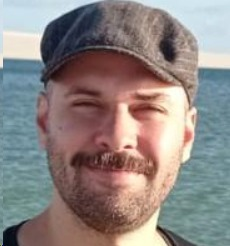
Caio A. R. dos Santos
Última formação acadêmica:
Doutorado em Ciência da Computação.Instituto/local onde trabalha:
Faculdade de Computação/UFU.Área de atuação:
Confiabilidade e Desenvolvimento de Software
César Guilherme de Almeida
Última formação acadêmica:
Doutorado em Matemática Aplicada - UNICAMPInstituto/local onde trabalha:
IME/UFUÁrea de atuação:
Modelagem matemática e métodos numéricos
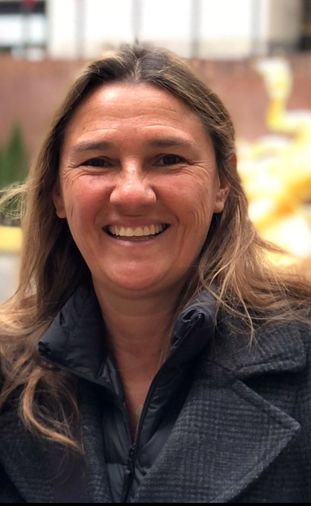
Christina Testa
Última formação acadêmica:
Mestrado em Comunicação e Semiótica - PUC/SPInstituto/local onde trabalha:
UFUÁrea de atuação:
Gestão de Projetos de TI e Marketing
Danilo Elias de Oliveira
Última formação acadêmica:
Doutorado em Matemática AplicadaInstituto/local onde trabalha:
IME/UFUÁrea de atuação:
Otimização
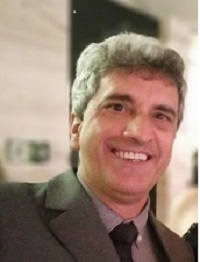
Ednaldo Carvalho Guimarães
Última formação acadêmica:
Doutorado em Engenharia Agrícola - UNICAMPInstituto/local onde trabalha:
IME/UFUÁrea de atuação:
Estatística Aplicada
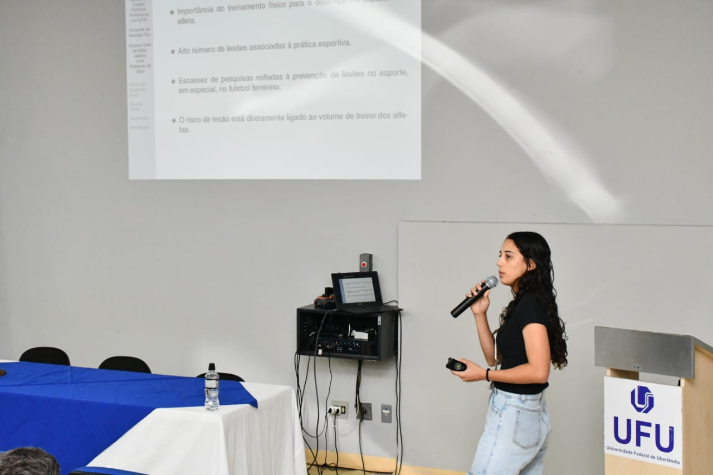
Fernanda Flor
Última formação acadêmica:
Doutorado em Matemática AplicadaInstituto/local onde trabalha:
IME/UFUÁrea de atuação:
Inteligência Computacional
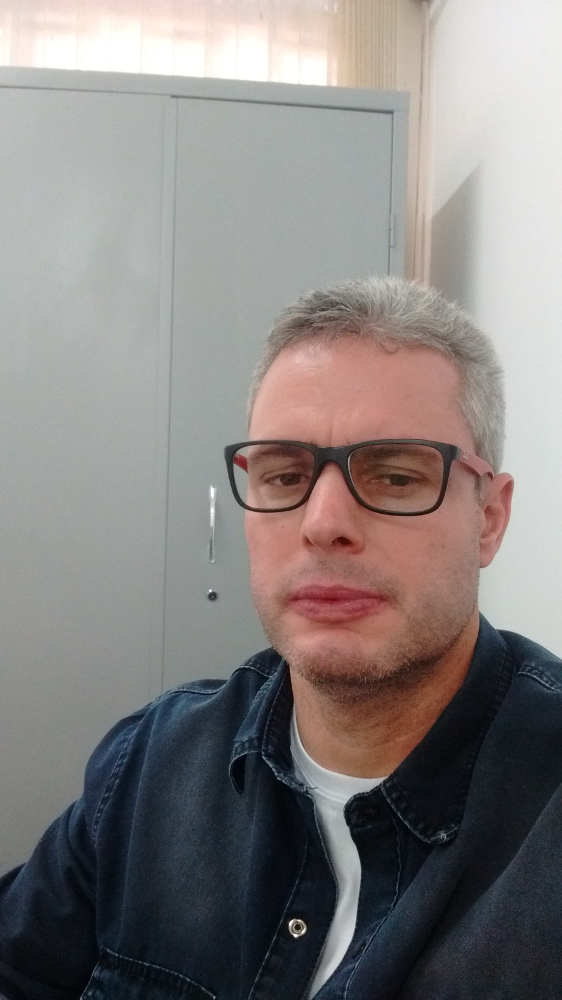
Janser Moura Pereira
Última formação acadêmica:
Doutorado em Estatística - UFLAInstituto/local onde trabalha:
UFUÁrea de atuação:
Inferência bayesiana e modelos estatísticos
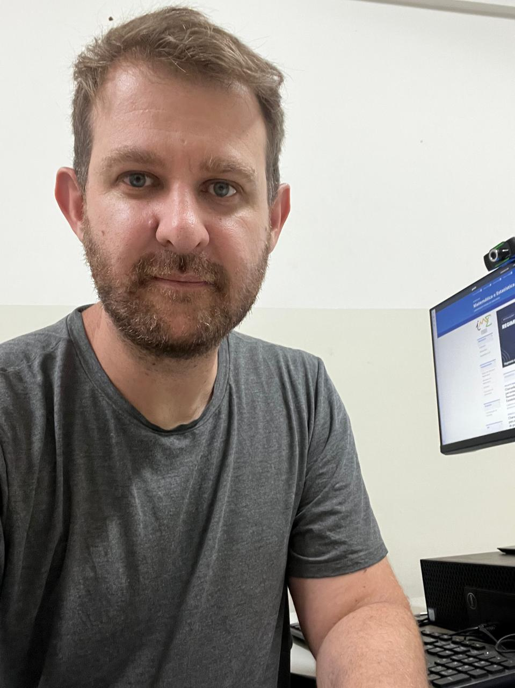
Josuel Kruppa Rogenski
Última formação acadêmica:
Doutorado em Matemática Computacional - UFUInstituto/local onde trabalha:
IME/UFUÁrea de atuação:
Mecânica dos fluidos computacional
José Waldemar Silva
Última formação acadêmica:
Possui graduação em Matemática pela Universidade Federal de Uberlândia (2001), mestrado em Estatística e Experimentação Agropecuária pela Universidade Federal de Lavras (2004) e doutorado em Estatística e Experimentação Agropecuária pela Universidade Federal de Lavras (2008)Instituto/local onde trabalha:
tualmente é professor do Instituto de Matemática e Estatística da Universidade Federal de Uberlândia (IME/UFU)Área de atuação:
Ministra aulas de estatística e atua principalmente em análises estatísticas em geral, inferëncia bayesiana e ciência de dados.
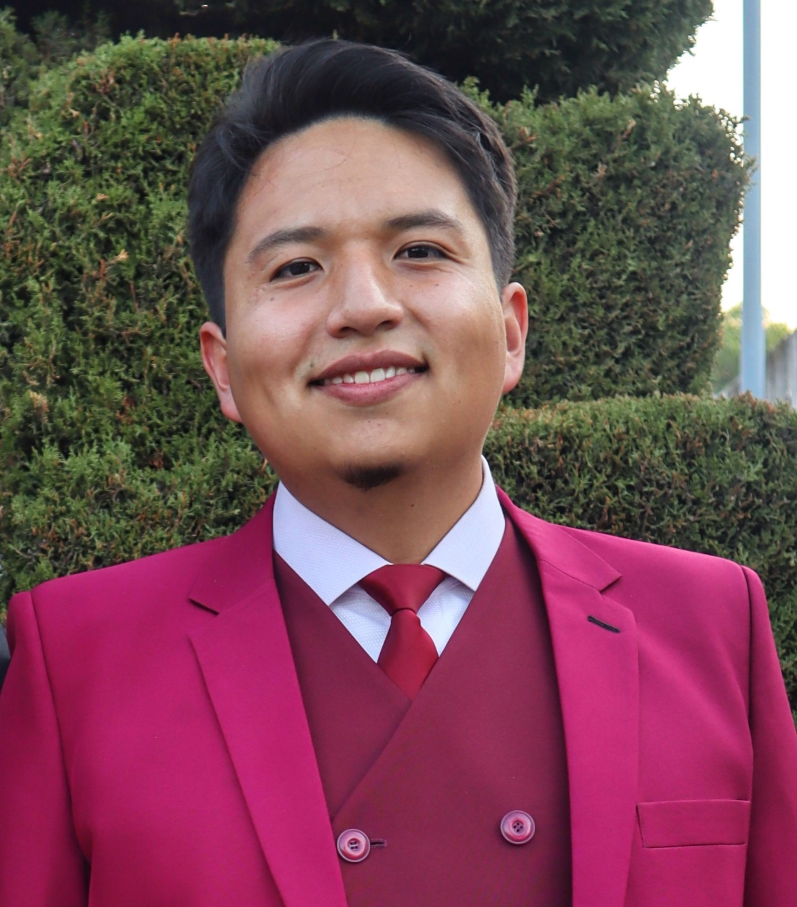
Kevin Williams Marroquín Moreta
Última formação acadêmica:
Graduação em Matemática - Escuela Politécnica Nacional, Quito Equador.Instituto/local onde trabalha:
IME/UFUÁrea de atuação:
Inteligência Computacional
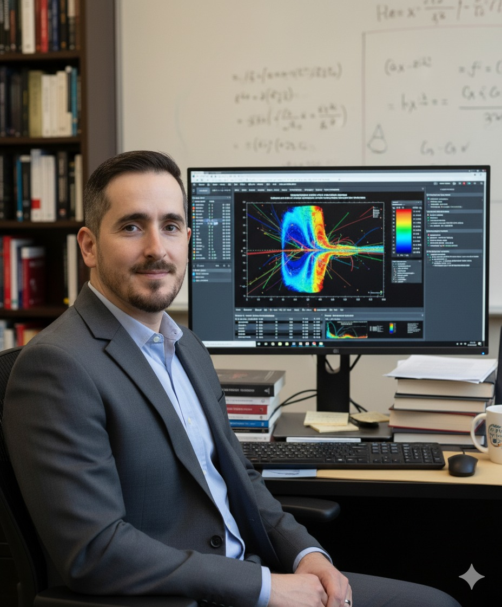
Rafael Alves Figueiredo
Última formação acadêmica:
Doutorado no ICMC-USPInstituto/local onde trabalha:
IME/UFUÁrea de atuação:
Matemática Aplicada
Ricardo Humberto de Oliveira Filho
Última formação acadêmica:
Doutorado em Engenharia MecânicaInstituto/local onde trabalha:
FEMEC/UFUÁrea de atuação:
Acústica previsional, avaliação e controle de ruído industrial e ambiental, avaliação e adequação acústica de ambientes, manutenção preditiva e projeto de máquinas e equipamentos
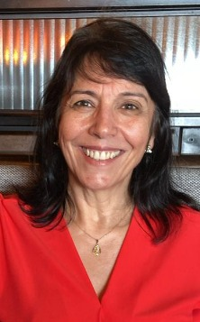
Rosana Jafelice
Última formação acadêmica:
Doutorado em Engenharia ElétricaInstituto/local onde trabalha:
IME/UFUÁrea de atuação:
Biomatemática, Modelagem, Inteligência Computacional
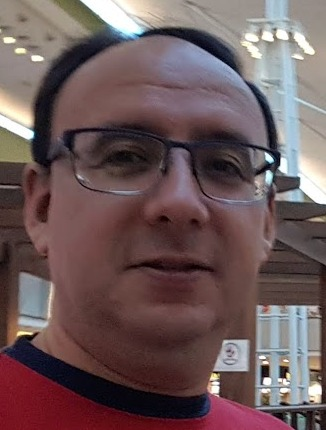
Victor Gonzalo
Última formação acadêmica:
Doutorado em MatemáticaInstituto/local onde trabalha:
UFUÁrea de atuação:
Álgebra e teoria de códigos
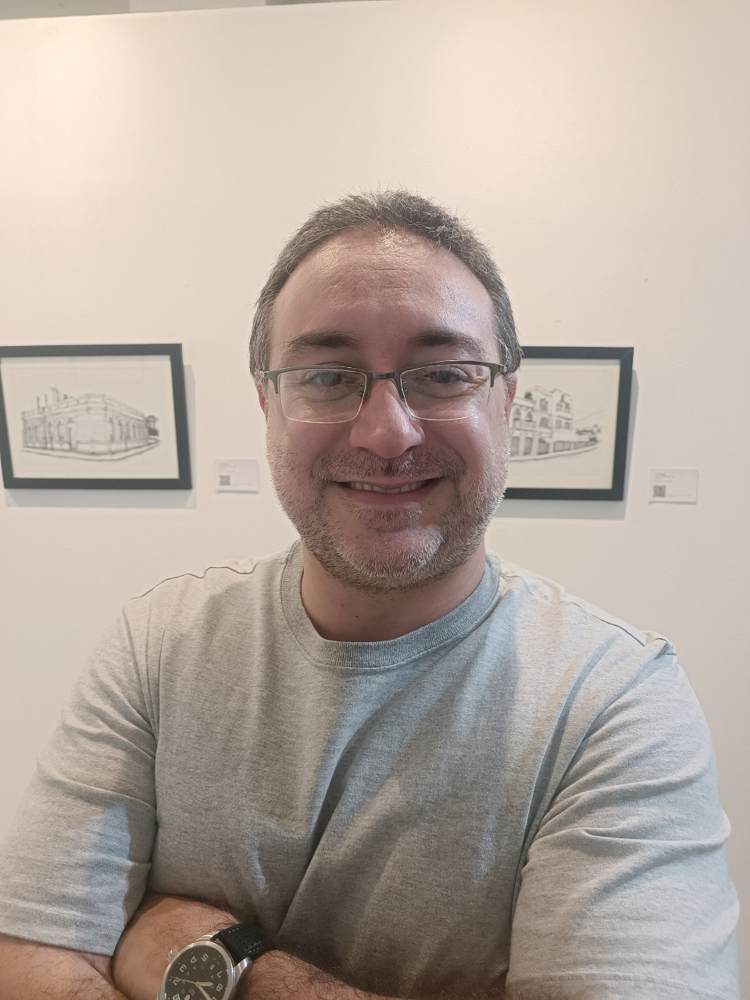